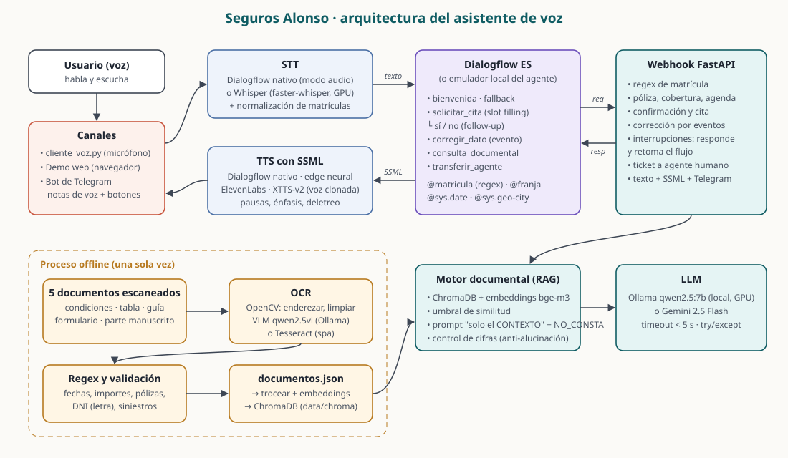
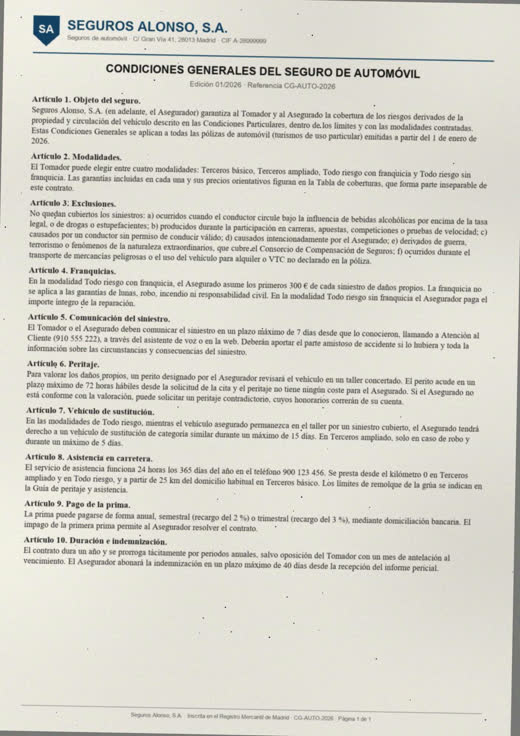
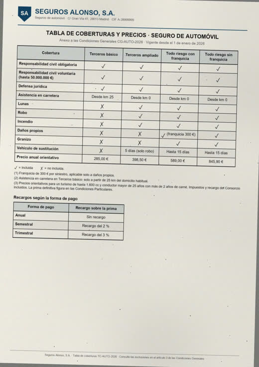
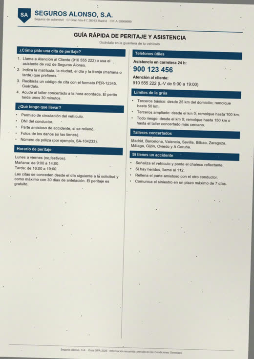
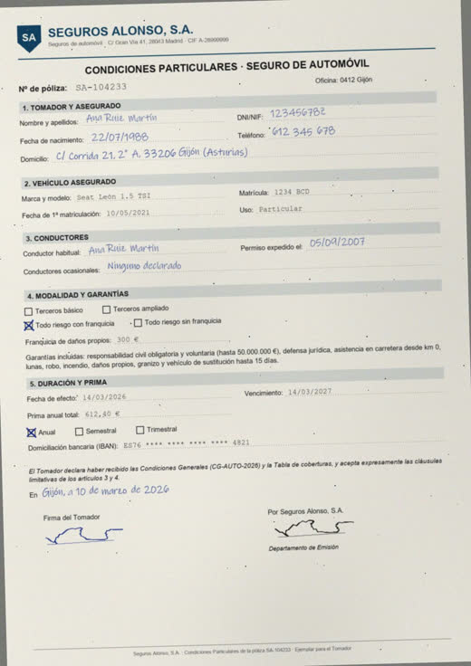
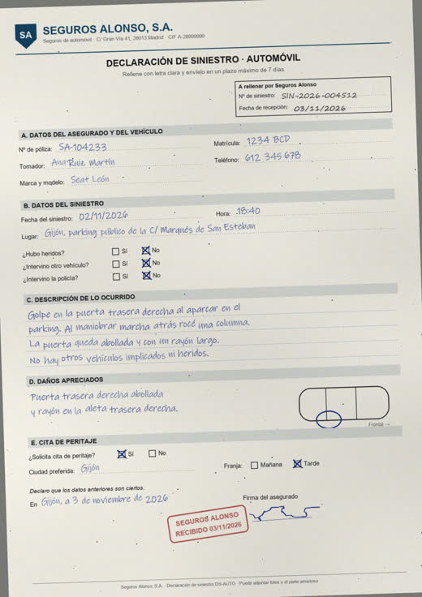

Clara, la asistente de voz de Seguros Alonso
Un cliente que ha tenido un golpe llama, habla con Clara y sale con una cita de peritaje confirmada: matrícula validada con regex, fecha, franja y ciudad comprobadas contra las reglas del negocio y un código de cita leído letra a letra. En la misma llamada puede preguntar por sus coberturas: Clara responde con cinco documentos escaneados que se pasaron por OCR, y si la respuesta no está en ellos, lo dice.
La conversación completa, de voz a voz
DIALOGFLOW_BACKEND=google python -m demo.demo_guiada.Qué pide la evaluación y dónde está resuelto
| Bloque | Puntos | Cómo se cumple |
|---|---|---|
| Agente Dialogflow ES | 4 | 6 intenciones significativas, entidad regex @matricula, entidades propias @franja y @tipo_dano, @sys.date y @sys.geo-city. Un único flujo con el contexto ctx_solicitud_en_curso que recoge 4 parámetros obligatorios y termina en un follow-up sí/no. Export listo en dist/SegurosAlonso.zip. |
| Voz extremo a extremo | 2 | STT y TTS nativos de Dialogflow en modo audio (cliente_voz.py --backend google), o Whisper + TTS neuronal en local. Respuestas en SSML con pausas, énfasis y deletreo. Todos los turnos por debajo de 5 s. |
| OCR, regex y respuesta documental | 3 | OCR offline con preprocesado OpenCV y modelo de visión (Tesseract como alternativa). Regex que extraen y validan fechas, importes, pólizas, DNI con letra de control y números de siniestro. RAG con ChromaDB y tres capas contra alucinaciones. |
| Documentación, diagrama y vídeo | 1 | README con caso de uso, diagrama, intenciones, decisiones e instrucciones. Vídeo de 2 min 19 s generado automáticamente. |
| Mejoras opcionales | +1,5 | Las seis del enunciado: Telegram con botones y notas de voz, STT/TTS de terceros con clonación de voz, correcciones e interrupciones con eventos, base vectorial, documentos complejos y transferencia a humano. |
Cómo viaja una frase
El usuario habla por un canal (terminal, web o Telegram). El audio se transcribe, Dialogflow decide la intención y llama al webhook FastAPI, que aplica las reglas del negocio o consulta los documentos. La respuesta vuelve como SSML y se sintetiza. El OCR y el índice vectorial se construyen una sola vez, antes de arrancar.

Los 11 turnos de la demo
Así respondió el sistema en la ejecución que generó el vídeo. Lo que aparece en coral es lo que entendió Whisper.
¡Hola! Soy Clara, la asistente virtual de Seguros Alonso. Puedo pedirte cita con un perito para revisar los daños de tu coche, o resolver dudas sobre tus coberturas y condiciones. ¿En qué te ayudo?
¿Cuál es la matrícula del vehículo?
Gracias, Ana. He encontrado tu Seat León. ¿Qué día te viene bien para la cita?
No, el peritaje es gratuito para ti. Seguimos con tu cita. ¿Qué día te viene bien para la cita?
Perfecto. ¿En qué ciudad quieres que te vea el perito?
Ana, te resumo la solicitud: cita de peritaje para tu Seat León, matrícula 1234 BCD, el lunes 9 de noviembre por la mañana, en Talleres El Musel, Gijón. Motivo: daños de chapa. ¿Confirmo la cita?
Ana, te resumo la solicitud: … el lunes 9 de noviembre por la tarde, en Talleres El Musel, Gijón. ¿Confirmo la cita?
¡Hecho! Tu cita es la PER-81094. Te atenderá Elena Prieto, del equipo de peritos, el lunes 9 de noviembre a las 18:30 en Talleres El Musel, avenida de la Costa 64, Gijón. Lleva el permiso de circulación, tu DNI y, si lo tienes, el parte amistoso.
El todo riesgo sin franquicia cuesta 845,90 € al año.
No dispongo de esa información en la documentación de Seguros Alonso. ¿Quieres que te pase con un agente?
Claro, te paso con una persona del equipo de atención al cliente. Tu número de ticket es el TCK-514449. Si se corta, puedes llamar al 910 555 222.
Un solo contexto, seis intenciones
| Intención | Contexto | Para qué |
|---|---|---|
solicitar_cita | crea ctx_solicitud_en_curso | Recoge matrícula, fecha, franja y ciudad con slot filling; el webhook interviene en cada turno. |
solicitar_cita - si | follow-up | Confirma: revalida y crea la cita con perito, hora y dirección. |
solicitar_cita - no | follow-up | No confirma: deja cambiar un dato o cancela. |
corregir_dato | requiere el contexto | "Mejor el jueves": fusiona el dato y relanza el evento SOLICITAR_CITA. |
consulta_documental | global, retoma el flujo | Preguntas sobre coberturas, plazos y condiciones, contestadas con RAG. |
transferir_agente | cierra el contexto | Pasa a una persona con ticket y lo ya recogido. |
Regla que solo vigila el webhook: la clase [B-DF-HJ-NP-TV-Z] del ejemplo de clase deja pasar la Q (el rango P-T la incluye). La entidad de Dialogflow se deja permisiva y el webhook aplica la regla exacta: cuatro cifras y tres consonantes sin Ñ ni Q.
Cinco documentos difíciles a propósito
Generados como escaneos reales: giro de 0,5 a 2°, papel gris, iluminación irregular, polvo y compresión JPEG.
Se enderezan, se limpian con Non-Local Means y se ecualizan con CLAHE antes de pasarlos al modelo de visión
qwen2.5vl:7b, que devuelve Markdown y conserva las tablas.





El CER de los formularios sube porque el modelo los reordena como tablas y omite cabecera y pie, no porque lea mal la letra: casi todas las palabras están. Sobre el texto se aplican regex que extraen y validan campos: DNI 12345678Z con su letra de control, la póliza SA-104233, el siniestro SIN-2026-004512, fechas de calendario reales e importes como 612,40 €. Las confusiones del OCR (O/0, l/1, S/5, B/8) se corrigen solo en los candidatos y solo si el resultado valida.
Tres capas para no inventar
Umbral de similitud
42 fragmentos con embeddings bge-m3 en ChromaDB. Si ninguno supera 0,40 de similitud, la respuesta es "no consta" sin llamar al LLM. Corta las preguntas ajenas, como la capital de Francia.
Evidencia literal
El LLM devuelve primero una cita literal del contexto y luego la respuesta, o NO_CONSTA. Si la cita no está en los fragmentos, se descarta.
Cifras comprobadas
Cualquier número o importe de la respuesta tiene que aparecer en el contexto o en la pregunta. Si no, se trata como no respondible.
Calibrado con 22 preguntas con respuesta y 14 sin ella: las 36 salen bien, con 0,30 s de media. Si el modelo falla o tarda, hay timeout y try/except, y Clara ofrece pasar con un agente.
SSML y latencia
El cliente de voz avisa con {"canal": "voz"} y el webhook responde en SSML. Para chat y Telegram manda texto plano.
<speak>¡Hecho! <break time="200ms"/> Tu cita es la <say-as interpret-as="characters">PER</say-as> <break time="150ms"/><say-as interpret-as="characters">81094</say-as>. … <prosody rate="90%">Lleva el permiso de circulación, tu DNI y, si lo tienes, el parte amistoso.</prosody> <emphasis level="moderate">¿Te ayudo con algo más?</emphasis> </speak>
Las seis del enunciado
| Mejora | Implementación |
|---|---|
| Telegram con respuestas enriquecidas | telegram_bot.py: texto, notas de voz de ida y vuelta, botones inline. El webhook emite además el payload TELEGRAM para la integración nativa. |
| STT/TTS de terceros y voz clonada | Whisper en GPU; TTS edge, ElevenLabs con clonación instantánea y XTTS-v2 local a partir de 30 s de tu voz. |
| Interrupciones y corrección con eventos | corregir_dato + followupEventInput; preguntas a mitad del flujo se responden y se retoma. |
| Base de datos vectorial | ChromaDB con embeddings bge-m3 y recuperación por palabras de respaldo. |
| Documentos complejos | Tabla con rejilla, dos columnas, formulario manuscrito y parte de siniestro a mano. |
| Transferencia a agente humano | transferir_agente con ticket, resumen y liveAgentHandoff. |
Probarlo contra Google destapó tres cosas que el emulador no hacía y que ya están resueltas: Dialogflow abandona el slot filling si una pregunta encaja con otra intención (el webhook guarda lo recogido en el contexto y retoma); los contextos de salida de una intención reciben también sus parámetros vacíos (copia guardado_* en el contexto); y el STT de Google perdía las letras de la matrícula (pistas de adaptación, silencio final y normalización de "1234 be ce de" en el webhook).
Además, un emulador local de Dialogflow ES carga el mismo export del agente y reproduce el slot filling, los contextos, los follow-ups y los eventos.
Así todo se prueba sin cuenta de Google, y con DIALOGFLOW_BACKEND=google funciona igual contra el agente real.
Qué falta para la entrega
Estado de la entrega
- Hecho: agente importado en Dialogflow ES (proyecto
segurosalonso-al9y), webhook expuesto por túnel y cuenta de servicio con el rol Dialogflow API Client. El guion completo funciona por voz con el STT y el TTS de Google. - Grabar el vídeo de entrega hablando tú, siguiendo el mismo guion.
- Voz clonada XTTS: grabar tu voz y aceptar la licencia no comercial CPML de Coqui en la primera descarga del modelo.
- Telegram: crear el bot con @BotFather y poner
TELEGRAM_BOT_TOKEN.